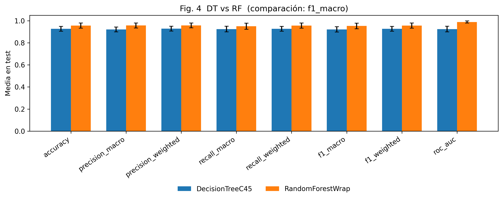
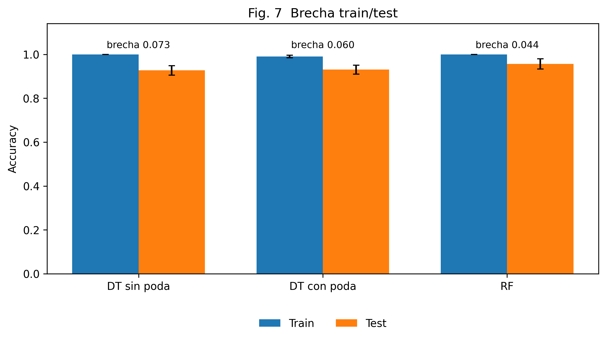
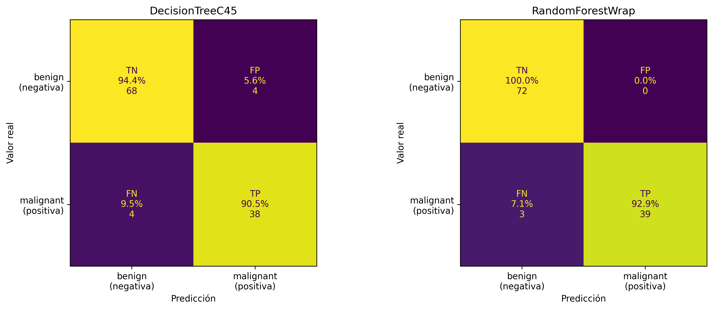
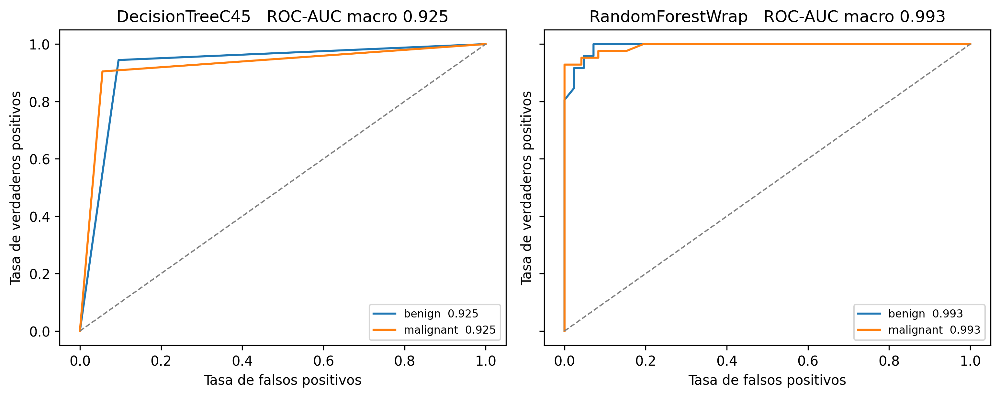
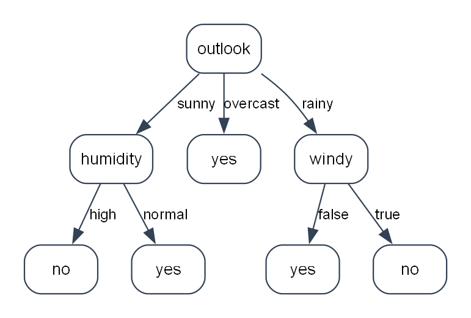

1. Dónde está el trabajo
La corrida que cita el PDF es la del 11 de noviembre, en esta máquina, sobre Heart Disease: las cuatro sedes, 920 filas, clase ausencia/presencia. Los barridos E2–E11 salieron del entrenamiento. El 12 de noviembre el mismo árbol se leyó, aparte, sobre Play Tennis e Iris. El PDF tiene 12 carillas.
| Entregable de la consigna | Estado | Lectura |
|---|---|---|
| Árbol de decisión desarrollado por el equipo | Armado | Hay nodo, entropía, gain ratio, cortes continuos, faltantes fraccionales, poda pesimista y una clase DecisionTreeC45 compatible con scikit-learn. Quedan desvíos respecto de C4.5, detallados más abajo. |
| Random Forest, con biblioteca permitida | Armado | RandomForestWrap sobre RandomForestClassifier. Misma firma fit / predict / predict_proba / score. |
| Comparar rendimiento al cambiar parámetros | Medido | E2–E4, E6–E8, E10 y E11 corrieron sobre las 736 filas de entrenamiento. La regla elige el modelo más chico dentro de un desvío del máximo. Profundidad, gain ratio y cantidad de árboles siguen subiendo en el extremo. |
| Interfaz para correr pruebas y ver resultados | Armada | El panel es Gradio y está antes de las 25 particiones. Ver árbol dibuja con Graphviz: entero si hay menos de 30 nodos, y si no los primeros 3 niveles. El dibujo se probó en local con Play Tennis (8 nodos) y con un ajuste de Heart Disease (448 nodos). El click en Colab no se vio desde acá. |
| Notebook ejecutable de punta a punta | Corrido en local | La corrida completa es la Versión 7, el 11 de noviembre, y el archivo guardó esas salidas. Las versiones 8 a 16 cambiaron métricas, panel, setup, la lectura de los tres conjuntos y el orden del panel. Esa parte no se volvió a correr de punta a punta. |
| Informe LNCS, hasta 12 carillas, con referencias | Compilado | Doce carillas. Cita a Janosi, Steinbrunn, Pfisterer y Detrano, además de Quinlan, Liu, Breiman y Pedregosa. Incluye la sección de discretos, continuos y mixtos. Falta la pasada de ortografía y subirlo. |
| Trello revisable por la cátedra | Desactualizado | El tablero en vivo no se movió. El export sigue contando el plan, no esta corrida. |
| Dataset | Heart Disease | 920 filas de Cleveland, Hungría, Suiza y Long Beach. Clase binaria: 411 ausencia y 509 presencia. 1759 faltantes, sin imputar en el cuadro. El colesterol 0 se dejó: son 172. |
2. Qué piden la consigna y el ejemplo
TP-IA-2026.pdf es una carilla. El trabajo es implementar el árbol, comparar su rendimiento de clasificación con un Random Forest al cambiar la parametrización, y escribir el informe. El árbol tiene que ser del equipo. Para el bosque, el enunciado dice, con esa grafía: «para el algoritmo RF se podrá utilizar un modelo de la libraría Scikit-learn». La base teórica que cita es C4.5 de Quinlan, vía Liu, Web Data Mining, p. 67, y Breiman, Random Forests, Machine Learning 45, 2001.
El informe digital tiene que traer introducción, descripción breve de los algoritmos, solución implementada con los problemas encontrados, simulaciones y resultados, conclusiones y referencias. Formato LNCS, máximo 12 carillas. La nota mira prolijidad, redacción y ortografía. Si una referencia no coincide con lo desarrollado, el práctico se desaprueba sin recuperatorio. También piden interfaz de operación completa, entregas parciales al estilo ágil, y Trello. El código corre en Colab.
El apartado «Sobre el uso de IA» figura en el PDF y no tiene texto extraíble. Conviene confirmar con la cátedra qué quedó escrito ahí antes de entregar.
EjemploInforme.pdf es un paper LNCS de la cátedra (Sampallo, Gramajo, González Thomas y Varone) sobre madurez de naranjas con Naive Bayes y KNN. No es una plantilla del enunciado de este año: está en inglés y el equipo ya resolvió que el informe va en español. Sirve como muestra de género. El texto de entrega está en informe/main.tex, en español, y compiló. Las secciones 3 y 4 de la bitácora de Nadine siguen siendo la fuente de los números; ya no son el único borrador.
El apunte Librerias_Python_para_COLAB.pdf marca NumPy, pandas, Matplotlib, Graphviz para dibujar el árbol, ipywidgets o, como alternativa, Gradio. El panel usa Gradio y el dibujo usa Graphviz. El setup instala los dos. Como datos de prueba el apunte nombra Iris, Breast Cancer Wisconsin y Play Tennis. Breast Cancer queda como respaldo si no hay CSV. Play Tennis e Iris están en data/ y en la sección del PDF sobre discretos, continuos y mixtos. El número de la comparación sigue siendo el de Heart Disease.
3. El tablero
El export mYvQVOWz - ia.json es el board «IA»: 5 listas y 62 tarjetas. Los nombres de los labels están vacíos; el color no dice si una tarjeta es árbol, bosque, experimento, interfaz o informe. Las tarjetas siguen hablando de owners A–E. Los nombres reales están en el notebook, no en el tablero.
| Lista | Tarjetas | Qué hay |
|---|---|---|
| Hecho | 6 | 1 repo, 2 tablero, 3 consulta del dataset, 4 idioma español, 5 roles, 10 notebook en Colab. Varias siguen con el checklist interno sin tildar. |
| En curso | 1 | 12. Adaptar al dataset real cuando llegue. En el export sigue abierta. En el repo el CSV de las cuatro sedes ya está en data/dataset.csv. |
| En revisión | 29 | Setup, EDA, árbol base (13–18), tests (19), continuos (21), parada, faltantes, factor t, poda, u(), API sklearn, predict_proba (22–29), wrapper RF, métricas, ROC, CV 5×5, Tabla 2, Tabla 5, Fig. 7, Fig. 9 y el holdout (30–35, 39, 41, 43). La 6, instalar LaTeX, sigue en esta lista en el export: en esta máquina llncs.cls 2.26 y splncs04.bst compilaron el PDF. |
| Bloqueado | 4 | 36 barridos del árbol (E2–E4), 37 barridos del bosque (E6–E7), 38 learning curve (E8), 40 importancias y tamaño contra accuracy (E10–E11). En el export siguen bloqueadas. En el repo ya corrieron, el 11 de noviembre, solo sobre el entrenamiento. |
| Ideas / Backlog | 22 | En el export siguen acá la prueba de ipywidgets, el panel, las figuras, el paper y la entrega. En el repo, la 11 ya se probó en Colab, el panel de Gradio está antes de las métricas, las figuras y las tablas están en figuras/, y informe/main.tex compiló a 12 carillas. El coloquio, la ortografía y la subida siguen sin hacer. |
El export es una foto vieja del tablero. Las listas no se movieron después de la corrida del 11 de noviembre. Las tarjetas 36 a 40 ya no dependen de código que falte: los barridos corrieron sobre las 736 filas de entrenamiento y el PDF publica la regla del modelo más chico dentro de un desvío del máximo.
Los documentos que las tarjetas citan —docs/technical.md, docs/informe-lncs.md, ROADMAP.md— no están en este repositorio. Las bitácoras lo anotan cada vez. El plan fino vive en el texto de Trello y en el notebook.
4. Qué está hecho
Datos y entorno
La celda de setup fija SEED = 42, instala Gradio y el paquete Graphviz, y en Colab también el programa dot. Imprime las versiones y define RUTA_DATOS = "data/dataset.csv". Si están los cuatro archivos procesados de Heart Disease, la celda 1.2 arma las 920 filas y escribe ese CSV. Si no están y el CSV sí, lee el CSV. Si no hay ninguno, carga Breast Cancer. El tipo de cada columna sale de los valores: texto y bool son categorías, un entero con hasta 10 valores distintos es un código, y el resto numérico es continuo. En Heart Disease quedan 5 continuas y 8 códigos. Hay 1759 faltantes y no se imputan en el cuadro que ve el árbol. La línea base de «siempre presencia» es 55,3 %. La métrica de comparación es f1_macro.
En data/ también están Play Tennis (weather.csv, 14 filas, cuatro categorías) e Iris (iris.csv, 150 filas, cuatro continuos). Mauricio los subió a Colab junto con dataset.csv.
Árbol
Hay dos capas. ArbolC45 es el núcleo categórico de octubre (Celeste Martin Rodich): Nodo, entropía, ganancia, split info, gain ratio, partición por valor, fit, predict y export_text. Encima, _ArbolC45Parametrizable y la fachada DecisionTreeC45(BaseEstimator, ClassifierMixin) integran continuos, pesos, poda y la API de scikit-learn.
- Continuos: umbral en el punto medio entre valores distintos. Se evalúan las fronteras donde cambia la pureza de clase, no todos los puntos medios. Esa decisión está escrita en la celda 3.1.
- Parada: clase única, sin atributos,
min_samples_split,max_depth, y ningún corte que cumplamin_samples_leafymin_gain_ratio. - Faltantes: el caso se reparte entre las ramas conocidas con peso igual a la proporción de masa conocida. En predicción, si el valor falta, se mezclan las distribuciones de las ramas.
- Cada nodo de decisión guarda
t = n_conocidos / n_total. - Poda pesimista en postorden, con
u(e, N, CF)referida a la rutina AddErrs del apéndice de Quinlan, pp. 278–279, CF por defecto 0,25. predict_probadevuelve la distribución de la hoja.cross_val_scoreyGridSearchCVestán contemplados en la celda de interoperabilidad.
Medición
Un solo RepeatedStratifiedKFold(n_splits=5, n_repeats=5, random_state=42). evaluar_cv usa ese objeto y rechaza otro splitter. El bosque imputa numéricas con la mediana, categóricas con la moda, y aplica one-hot dentro de fit y predict. El cuadro que ve el árbol no se imputa.
Las tablas 2 y 5, las figuras 4, 6, 7, 8, 9 y 10, y holdout_final.json salieron de la corrida del 11 de noviembre y están en figuras/. El holdout es 736 y 184 filas. Los barridos vieron solo esas 736. La celda de métricas, desde la Versión 12, hace una sola pasada y usa como máximo 2 procesos. Esa versión no se volvió a entrenar: los números del PDF siguen siendo los del 11.
Interfaz
La prueba mínima de ipywidgets corrió en Colab: versión 7.7.1, el botón se ve, el primer click imprime y el segundo reemplaza la línea. El panel dejó esos controles, pasó a Gradio en la Versión 13 y en la Versión 16 quedó antes de las 25 particiones. Elige el CSV de data/, la clase, los atributos y los hiperparámetros. Ver árbol ajusta una sola vez y dibuja el camino de una fila. Comparar mide los dos modelos con un tope de 10 particiones y no toca el cv de 25. En local el dibujo de Play Tennis y el recorte a 3 niveles de Heart Disease ya se vieron. El botón, apretado dentro de Colab, no se vio desde acá.
Texto ya redactado
informe/main.tex y referencias.bib arman el paper: introducción, algoritmos, solución y problemas, metodología, resultados, discretos continuos y mixtos, discusión y conclusiones. Compiló a 12 carillas con Quinlan 1993 (AddErrs, pp. 278–279), Liu p. 67, Breiman 2001, Pedregosa et al. 2011, Heart Disease (Janosi, Steinbrunn, Pfisterer y Detrano) y Detrano et al. 1989. El texto dice que el árbol no es un C4.5 completo. La sección nueva usa la lectura del 12 de noviembre y no reemplaza el F1 de Heart Disease.
5. Qué falta
Ordenado por lo que la consigna puede descontar, no por el número de tarjeta.
- Lectura y entrega del PDF.
informe/main.pdftiene 12 carillas, el tope. Falta una pasada de ortografía y subirlo a la cátedra. El coloquio no está armado. - Ver el panel en Colab. El dibujo se probó en local. Mauricio subió
data/a Colab. Desde acá no se vio apretar Ver árbol ni Comparar en esa sesión. El setup de la Versión 14 hay que volver a correr ahí para que instale Gradio ydot. - Cierre del tablero. El export sigue desactualizado. El tablero en vivo no se movió.
6. Qué está hecho, pero flojo
Los números de Breast Cancer del 10 de noviembre (accuracy 0,9269, holdout de 455 y 114 filas, poda de 47,6 a 30,7 nodos) son historia. La corrida que cita el PDF es la del 11 de noviembre, en la sección 9.
Las versiones 8 a 15 no rehicieron las 25 particiones
La Versión 7 guardó las salidas de Heart Disease. Después la celda de métricas pasó a una sola pasada y a 2 procesos, el panel pasó a Gradio y el setup pasó a instalar Graphviz. Esas celdas no se volvieron a correr de punta a punta. En Colab, una pasada anterior cortó a los 50 minutos porque la primera tanda nombraba el modelo DT y la segunda DecisionTreeC45. Esa salida se descartó. Un Run all nuevo puede pisar tabla2_dt_vs_rf.tex y la Fig. 4.
La poda baja la media y sube un corte
En 25 particiones la poda baja de 452 a 71,2 nodos y la accuracy de prueba de 0,7850 a 0,7741. La brecha pasa de 0,1435 a 0,0922. En el holdout de la misma semilla la accuracy de prueba sube de 0,7880 a 0,7989, y los nodos pasan de 448 a 71. Las dos lecturas están en el PDF.
Tres grillas no cierran un óptimo
Profundidad, gain ratio y cantidad de árboles siguen subiendo en el extremo más complejo. La regla igual elige el más chico dentro de un desvío: profundidad 2, gain ratio 0,1 y 10 árboles. Juntarlos no es una grilla cruzada. En el holdout, el bosque por defecto queda en F1 macro 0,8616 y el bosque elegido en 0,8336.
El árbol propio es lento para una demo
Ajustar el árbol lleva 50,6 ± 9,8 s por partición. El bosque de 100 árboles lleva 0,48 ± 0,04 s. El panel compara con un tope de 10 particiones. Ver árbol es un solo ajuste: en Heart Disease, cerca de un minuto; en Play Tennis, inmediato.
Gain ratio del núcleo viejo
En gain_ratio del árbol base, si split_info es 0 la función devuelve 0,0. La tarjeta 16 pedía None, para no elegir un atributo que no parte. El árbol que se evalúa, _candidatos, también usa 0,0 cuando el split info es 0. Con min_gain_ratio=0 ese corte puede entrar.
Empates al azar, no por nombre
Si dos cortes empatan en gain ratio, el árbol parametrizable desempata con random_state. La tarjeta pedía un orden fijo, alfabético o por índice, para que el árbol no dependa de una semilla. Con SEED la corrida se repite. Sin semilla, no.
Dos árboles en el mismo notebook
ArbolC45.fit(df, target) sigue vivo al lado de DecisionTreeC45.fit(X, y). El primero no ve columnas numéricas. Una celda de prueba todavía menciona el fallback a Iris, que es todo continuo, y en esa versión el árbol avisa que no puede usarlo. Quien lea el notebook de arriba hacia abajo puede creer que el modelo entregable es el de la sección 2. El que entra a las tablas es el de la sección 3.
Las figuras del corazón ya están en el PDF
La Fig. 9 es el holdout de 184 filas. El árbol se equivoca en 25 de 82 ausencia y en 14 de 102 presencia. El bosque, en 15 y en 10. La Fig. 11, el árbol de Play Tennis, entró el 12 de noviembre. Las figuras no se pasaron a gris ni se midieron a 122 mm.
El tablero no se puede mostrar así
La tarjeta 61 dice que el Trello es parte del entregable. Quien abra el tablero sigue viendo el C4.5 en «en revisión», LaTeX en el mismo lugar y la interfaz como idea, aunque el repo ya tenga el panel y el PDF. Los checks de las descripciones están casi todos sin tildar.
7. Contraste con los libros de Quinlan
En libros/ hay tres recortes con texto y el PDF completo de C4.5: Programs for Machine Learning (1993, 312 páginas). El PDF completo no tiene capa de texto: no se puede buscar AddErrs ahí. La verificación de la fórmula queda en lo que el equipo escribió contra las pp. 278–279, más estos recortes.
| Qué dice el recorte | Qué hace el código |
|---|---|
| §2.4, atributos continuos. Se ordena el atributo y se examinan los m−1 umbrales entre valores consecutivos. El umbral que parte un solo caso se deja afuera si el mínimo de casos es 2. Ordenar domina el tiempo cuando hay muchos valores distintos. | Se prueban puntos medios, y solo las fronteras en las que los dos grupos vecinos no son puros de la misma clase. Es la poda de candidatos de Fayyad e Irani. En Heart Disease, 374 candidatos coincidieron con los 454 de revisar todos los puntos medios. El default min_samples_leaf=1 es más permisivo que el 2 de Quinlan. El costo de ordenar es parte de los 51 s por ajuste. |
| Un atributo continuo puede volver a cortarse más abajo, con otro umbral. El recorte de dos páginas no lo dice en esas líneas; es el comportamiento de C4.5, porque un corte binario no agota el atributo. | _construir saca el atributo elegido de la lista, también si era continuo. En una rama, cada columna se corta una sola vez. En Heart Disease hay 13 atributos y la altura de las 25 particiones es 13, con desvío 0. En Iris, cuatro continuos, la altura del ajuste completo es 4 y la accuracy de entrenamiento es 0,9733. |
| C4.5 filtra por ganancia media y después ordena por gain ratio, para que un split info chico no gane con una ganancia insignificante. | No está. La bitácora de las tareas 13–18 lo deja anotado. En Heart Disease los códigos tienen pocos valores y los continuos se parten en dos, así que el sesgo de un split info chico casi no aparece. El PDF lo dice. |
| Capítulo 3. Un caso con atributo desconocido se parte en fragmentos con peso proporcional a la frecuencia de los valores conocidos, en el entrenamiento y en la clasificación. C4.5 no usa el surrogate split de CART. | El reparto y la predicción combinada están. El factor t por nodo es una decisión propia para achicar el N de la poda cuando hay faltantes. La bitácora lo separa de AddErrs. En el informe tiene que quedar esa separación: la cita de Quinlan cubre u(), no t. |
| §4.2. Se crece el árbol y después se poda. Hay dos operaciones: reemplazar un subárbol por una hoja, o reemplazarlo por su rama más usada. El error de re-sustitución no sirve para decidir; se usa una cota pesimista. CF bajo poda de más; CF alto casi no simplifica. El default histórico es 25 %. | Hay reemplazo por hoja, en postorden, con CF 0,25 y la cota de AddErrs. No hay reemplazo del subárbol por su rama más frecuente. La poda publicada es una parte de la poda de Quinlan. |
t). Citar «C4.5 completo» no coincide con el código.
La corrida publicada sí ejercita el capítulo 3: hay 1759 faltantes. ca falta en el 66,4 % de las filas y thal en el 52,8 %. El árbol reparte esa masa. El factor t es del equipo. La cita de Quinlan cubre u(), no t.
8. Informe técnico, con lo que ya se puede sostener
Esta sección junta el contenido que ya está medido y que el PDF de informe/main.pdf cita. El paper es más corto: no repite cada fila de la Tabla 2 en prosa.
8.1 Problema
Hay que clasificar con un árbol de decisión escrito por el equipo, al estilo C4.5, y con un Random Forest de scikit-learn, sobre el mismo protocolo. Se comparan accuracy, precisión, recall y F1 en promedio macro y ponderado, ROC-AUC, tiempo y tamaño. La métrica que decide es F1 macro.
Los datos de la comparación son Heart Disease, las cuatro sedes: 920 filas, 13 atributos, clase ausencia (411, 44,7 %) o presencia (509, 55,3 %). La línea base de «siempre presencia» es 55,3 %. Hay 1759 faltantes. El colesterol 0 aparece 172 veces y se deja, porque el archivo de nombres no lo define como faltante. Play Tennis e Iris se usan para ver el corte categórico y el continuo. No entran en la Tabla 2.
8.2 Algoritmos
El árbol elige el corte de mayor gain ratio. La ganancia es la caída de entropía. El split info penaliza un atributo que abre muchas ramas. En continuos el corte es binario, valor <= umbral o valor > umbral, con el umbral en el punto medio. Se crece hasta que una parada corta la recursión y, si pruning=True, se reemplazan subárboles por hojas cuando la cota pesimista de la hoja no supera la del subárbol.
El bosque es el de Breiman: muchos árboles sobre muestras bootstrap, y en cada corte un subconjunto de atributos (max_features="sqrt" por defecto en el wrapper). No se reimplementa. El wrapper fija n_estimators=100, bootstrap=True y random_state=SEED, imputa y codifica, y expone la misma interfaz que DecisionTreeC45.
8.3 Solución y problemas encontrados
- El dataset de las cuatro sedes está armado dentro del notebook. El signo de pregunta queda faltante. La clase 0 es ausencia y 1–4 es presencia.
- El primer wrapper usaba la firma del árbol mínimo. El árbol de la evaluación separa X e y. Se unificó
fit(X, y)para que un solo validador mida los dos. - Con dos clases,
roc_auc_score(..., multi_class="ovr")rechaza la matriz de dos columnas. El valor publicado es el promedio de una curva por clase. La Fig. 10 las dibuja. - Un control pedía que un solo corte continuo superara 0,85 de accuracy. Ese piso era de Breast Cancer. En Heart Disease el mejor corte,
chol≤ 42,50, da 0,5978. El informe publica el número. - La poda con la fórmula pesimista achica el árbol. En las 25 particiones la accuracy media de prueba baja de 0,7850 a 0,7741. En el holdout de la semilla 42 sube de 0,7880 a 0,7989.
- Pandas 3 guarda el texto como
StringDtype. El filtro que preguntaba solo porobjectocategoryno veía esas columnas. El texto ahora cuenta como categoría, y todo nodo guarda la clase mayoritaria.
8.4 Metodología
Semilla 42. Validación compartida: 5 folds estratificados, repetidos 5 veces, sobre las 920 filas. El holdout estratificado 80/20 se armó una vez: 736 y 184. Los barridos vieron solo las 736. El holdout de los valores por defecto está en holdout_final.json. El de la combinación elegida está aparte. La celda de métricas, desde la Versión 12, usa como máximo 2 procesos.
9. Resultados ya calculados
Heart Disease, cuatro sedes, 920 filas, clase ausencia/presencia. Corrida local del 11 de noviembre, semilla 42. Árbol sin tope de profundidad y sin poda, salvo donde se indica. Bosque con 100 árboles y max_features=sqrt. Media ± desvío en 25 particiones.
Tabla 2. Árbol contra bosque
| Métrica | DT | RF |
|---|---|---|
| Accuracy | 0,7850 ± 0,0265 | 0,8187 ± 0,0305 |
| Precisión macro | 0,7848 ± 0,0275 | 0,8185 ± 0,0317 |
| Precisión ponderada | 0,7856 ± 0,0269 | 0,8192 ± 0,0307 |
| Recall macro | 0,7796 ± 0,0270 | 0,8145 ± 0,0303 |
| Recall ponderado | 0,7850 ± 0,0265 | 0,8187 ± 0,0305 |
| F1 macro | 0,7809 ± 0,0271 | 0,8157 ± 0,0308 |
| F1 ponderado | 0,7840 ± 0,0266 | 0,8182 ± 0,0304 |
| ROC-AUC | 0,8195 ± 0,0295 | 0,8839 ± 0,0254 |
| Tiempo de ajuste (s) | 50,59 ± 9,80 | 0,484 ± 0,041 |
| Tiempo de predicción (s) | 0,151 ± 0,032 | 0,136 ± 0,023 |
| Nodos | 452,0 ± 36,4 | 28876 ± 665 |
| Hojas | 247,4 ± 18,6 | 14488 ± 332 |
| Altura | 13,0 ± 0,0 | 23,0 ± 1,3 |
En F1 macro el bosque queda arriba (0,8157 frente a 0,7809). El árbol tiene 452 nodos y altura 13. El bosque suma unos 28 900. Ajustar el árbol lleva unos 51 segundos por partición y el bosque menos de medio segundo.

Tabla 5. Poda pesimista, CF = 0,25
| Sin poda | Con poda | |
|---|---|---|
| Nodos | 452,00 ± 36,44 | 71,20 ± 15,74 |
| Hojas | 247,36 ± 18,63 | 39,04 ± 8,43 |
| Altura | 13,00 ± 0,00 | 8,84 ± 0,90 |
| Accuracy train | 0,9285 ± 0,0086 | 0,8663 ± 0,0151 |
| Accuracy test | 0,7850 ± 0,0265 | 0,7741 ± 0,0284 |
| Brecha | 0,1435 ± 0,0310 | 0,0922 ± 0,0353 |

Holdout final, una sola vez
736 entrenamiento, 184 prueba. La clase positiva es presencia. Este corte no eligió los valores por defecto. Los barridos sí usaron las 736, y el holdout de la combinación elegida está en el PDF, aparte de esta tabla.
| Accuracy | F1 macro | ROC-AUC | TN | FP | FN | TP | |
|---|---|---|---|---|---|---|---|
| DecisionTreeC45 | 0,7880 | 0,7819 | 0,8192 | 57 | 25 | 14 | 88 |
| RandomForestWrap | 0,8641 | 0,8616 | 0,9219 | 67 | 15 | 10 | 92 |
En las 82 ausencia y 102 presencia del test, el árbol se equivoca en 25 ausencia y 14 presencia. El bosque, en 15 y 10.


Barridos, solo el entrenamiento
La regla elige el modelo más chico cuya accuracy de prueba queda a menos de un desvío del máximo. Profundidad 2 (la accuracy sigue subiendo hasta sin tope, 0,7677). Hoja mínima 50. Gain ratio 0,1 (con 0,2 el árbol queda en un nodo y la accuracy baja a 0,5530). Diez árboles (sigue subiendo hasta 200, 0,8134). log2. Juntos, en el holdout, el F1 macro es 0,7926 y 0,8336. El bosque por defecto, en el mismo corte, queda en 0,8616. No fue una grilla cruzada.
Discretos, continuos y mixtos
Lectura del 12 de noviembre, mismo árbol y misma semilla. No reemplaza la Tabla 2. En Play Tennis y en Iris el tamaño es un ajuste con todas las filas. En Heart Disease los nodos, la altura y el F1 son las medias de las 25 particiones.
| Conjunto | Corte | Filas | Nodos | Altura | Ajuste | Otra lectura |
|---|---|---|---|---|---|---|
| Play Tennis | 4 categorías | 14 | 8 | 2 | 1,0000 | 12 de 14 al dejar una fila afuera |
| Iris | 4 continuos | 150 | 13 | 4 | 0,9733 | F1 0,9518 ± 0,0349 el árbol; 0,9532 ± 0,0334 el bosque |
| Heart Disease | 5 continuos, 8 códigos | 920 | 452 | 13 | 0,9285 | F1 0,7809 ± 0,0271 |
En Play Tennis el primer corte es outlook. overcast va a yes, rainy parte por windy y sunny parte por humidity. temperature no entra. En Iris el primer corte es petal_length ≤ 2,45 y esa rama es setosa; el ajuste deja 4 de 150 filas mal, porque un continuo no se vuelve a cortar. En el holdout de Heart Disease el primer corte es age ≤ 30,50.

10. Lo que queda para entregar
- Leer
informe/main.pdf. Son 12 carillas, el tope. La ortografía es una pasada humana. - Subir el PDF y el notebook. El título dice Versión 16. El panel está antes de las métricas: se puede usar sin esperar las 25 particiones. Un Run all sigue y deja el kernel ocupado.
- En el Trello, pasar a Hecho lo que esta corrida ya midió. El tablero no se movió desde acá.
- En Colab, correr el setup y abrir el panel. El dibujo ya se probó en local.